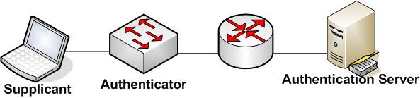
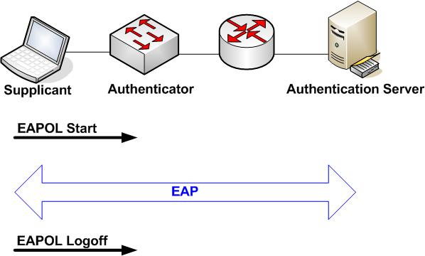
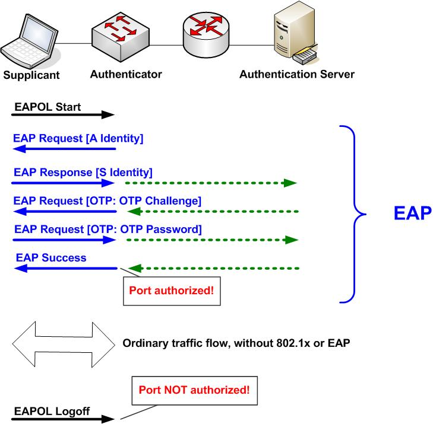

|
||||||||||||
IntroductionSecurity has become a very active interest lately for schools, universities, and enterprises. Many have been stunned and even overwhelmed with the waves of virus and worm attacks sweeping through their networks. Sometimes older network equipment can't handle the volume and kind of traffic these nasties send in their attempts to spread. Meanwhile, it seems like those lists of vulnerabilities in software and device code just keep growing. No, I'm not going to solve all that in this month's article!In response to all this, Cisco has been marketing the
Self-Defending
Network. Part of that is Network Access Control with Trust
Agent for checking that personal firewall and virus scanner are
enabled, etc. This leverages the 802.1x authentication mechanism that
have been out for while, along with something we'll talk about called
EAP. The idea is to check not only identity (authentication), but
compliance with security policies. Meanwhile, security has been a concern on the wireless LAN
(WLAN) front for a while now. WPA and 802.11i with AES encryption
look like they've addressed most of the concerns in that arena. But
these too use 802.1x and the EAP suite for authentication. What Is 802.1x?The standard 802.1x is an IEEE standard for Port-Based Network Access Control. The document is readily available on IEEE's web site (the URL can be found below). It is a modest 142 pages long.From the introduction to the 802.1x standard document, with
some omissions: "Port-based network
access control makes use of the physical access characteristics of IEEE
802 LAN infrastructures in order to provide a means of authenticating
and authorizing devices attached to a LAN port [...], and of preventing
access to that port in cases in which the authentication and
authorization process fails. [...] Examples of ports in
which the use of authentication can be desirable include the Ports of
MAC Bridges, [...] , and associations between stations and access
points in IEEE 802.11 Wireless LANs."
To say that briefly, 802.1x works at Layer 2 of the OSI model
to authentication and authorize devices on LAN switches and wireless
access points, WAP's. It does assume a point-to-point model. This means
that it is not really intended for situations such as multiple PC's
connecting to a switch via a hub or simple switch. Terminology802.1x does introduce some alternative terminology that we need to get used to. An authenticator helps authenticate what you connect to it. It does this via the authentication server. The supplicant is what is being authenticated. See the following diagram if that's unclear. 802.1x trivia item (for the next time you play): the Port Access Entity (PAE) is what executes the algorithms and follows the protocol(s). Each of the three items above has a PAE, but the PAE software does do different things on each of the three. How 802.1x Works
The 802.1x access control works on unaggregated physical ports at
OSI Layer 2. It allows or denies access. The access control it exerts
can govern bidirectional or inbound traffic. |
| 0 |
EAP Packet |
| 1 |
EAPOL Start |
| 2 |
EAPOL Logoff |
| 3 |
EAPOL Key |
| 4 |
EAPOL Encapsulated
ASF Alert |
The Key packet type is used for EAP variants that
allow an encryption key. The packet body is then a Key Descriptor, with
specified fields. We'll skip the details.
The ASF Alert EAP packet type allows for things like SNMP traps to be sent through a port where the authentication resulted in an Unauthorized state.
The standard notes that use in a shared environment
is highly insecure unless the supplicant to authenticator traffic
is a secure association, i.e. encrypted.
The following figure shows how the protocol works. It
basically provides a L2 wrapper to transport EAP information between
supplicant and authenticator. The authenticator then uses a
standard protocol, usually RADIUS, to relay information to and from the
authentication server.

Note that the EAPOL-Start message is only used if the supplicant
initiates the exchange. The authenticator can notice link status has
changed, and just jump right in with the EAP exchange.
It may seem a little silly, having a big diagram with only a couple of arrows in it. I hope that this emphasizes the key point here. That is, 802.1x and EAPOL just exist as a way to transport EAP information between Supplicant and Authenticator. The double arrow goes further since we'll see that the authenticator re-encapsulates the EAP information, typically within RADIUS, and passes it through to the authentication server.
EAP was first defined in the IETF RFC 2284. The EAP TLS
variant is defined in RFC 2716. For links to these, see the reference
list below.
The following figure shows the EAP format. Note that when
802.1x is the transport, all this fits into the 802.1x payload field,
with EAPOL packet type set to 0 (EAP packet).
| 1 |
Request |
| 2 |
Response |
| 3 |
Success |
| 4 |
Failure |
The ID is one byte for matching requests and responses. Length
is the byte count including the code, ID, length and data fields.
The data field format varies depending on the code field.
Types 3 and 4, Success and Failure are easy to describe: they have no
data field (0 bytes). Types 1 and 2 share a format. It boils down to a
type code (one byte) then the data for that type. Here's what
that makes the EAP packet look like:
The original RFC defines several types of EAP authentication.
They are:
| 1 |
Identity |
| 2 |
Notification |
| 3 |
Nak (response only) |
| 4 |
MD5-Challenge |
| 5 |
One-Time Password
(OTP) (RFC 1938) |
| 6 |
Generic Token Card |
RFC 2716 adds type 13, TLS.
Searching the IETF drafts for "EAP" leads to too many entries
to list here. You didn't want that much detail anyway, did you?
The RFC's contain some great diagrams showing the sequence of messages for the above EAP variants. The IEEE 802.1x standard goes through all this for EAP-OTP in a couple of different scenarios (supplicant initiated exchange, authenticator initiated, etc.). The following figure shows my version of the sequence of messages for EAP-OTP (One Time Password). This fills in the big EAP arrow in the above diagram to show the full sequence of messages.

The role of the authenticator is not just as pure relay agent.
It does observe enough of the EAP authentication exchange to recognize
the Success or Failure message. On that basis, it can then flag the
port as authorized (forwarding frames for this supplicant). If it
receives an EAPOL Logoff, it returns the port state to
unauthorized.
The following table lists some references you may find useful.
The IEEE standard is fairly readable. The RFC's are also fairly clearly
written.
| IEEE 802.1x standard document | http://grouper.ieee.org/groups/802/1/pages/802.1x.html |
| EAP standard, RFC
2284 |
http://www.ietf.org/rfc/rfc2284.txt |
| EAP TLS, RFC 2716 |
http://www.ietf.org/rfc/rfc2716.txt |
| One-Time Password, RFC 1938 | http://www.ietf.org/rfc/rfc1938.txt |
| EAP: IETF draft search page | http://search.ietf.org/ |
| RADIUS, RFC 2865 | http://www.ietf.org/rfc/rfc2865.txt |
| RADIUS Accounting, RFC 2866 | http://www.ietf.org/rfc/rfc2866.txt |
| RADIUS Tunneling
Attributes support, RFC's 2867, 2868 |
http://www.ietf.org/rfc/rfc2867.txt http://www.ietf.org/rfc/rfc2868.txt |
| RADIUS Extensions, RFC 2869 | http://www.ietf.org/rfc/rfc2869.txt |
| RADIUS Support for EAP, RFC 3579 | http://www.ietf.org/rfc/rfc3579.txt |
Dr. Peter J. Welcher (CCIE #1773, CCSI #94014, CCIP) is a
Senior Consultant with Chesapeake NetCraftsmen. NetCraftsmen is a
high-end consulting firm and Cisco Premier Partner dedicated to quality
consulting and knowledge transfer. NetCraftsmen has eight CCIE's, with
expertise including large network high-availability routing/switching
and design, VoIP, QoS, MPLS, IPSec VPN, wireless LAN and
bridging, network management, security, IP multicast, and other
areas. See
http://www.netcraftsmen.net for more information about
NetCraftsmen. Pete's links start at
http://www.netcraftsmen.net/welcher . New articles will be posted
under the Articles link. Questions, suggestions for articles, etc. can
be sent to pjw
<at> netcraftsmen <dot> net.